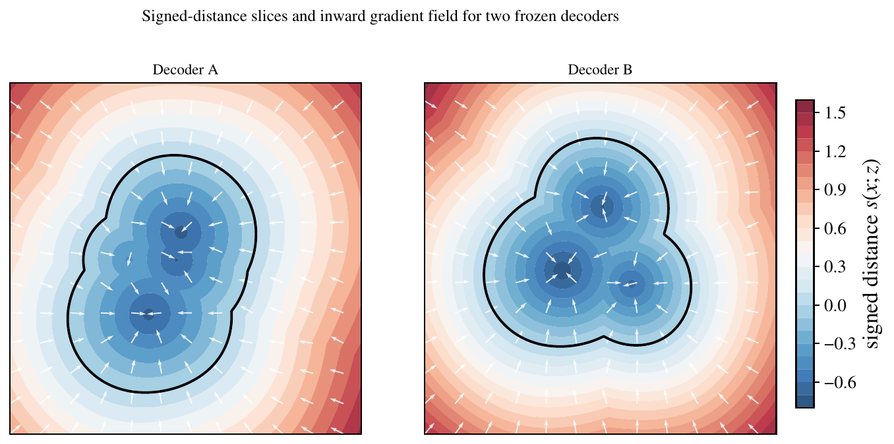
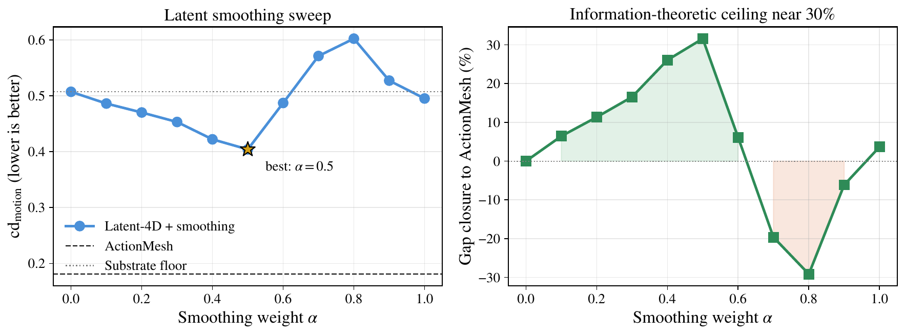
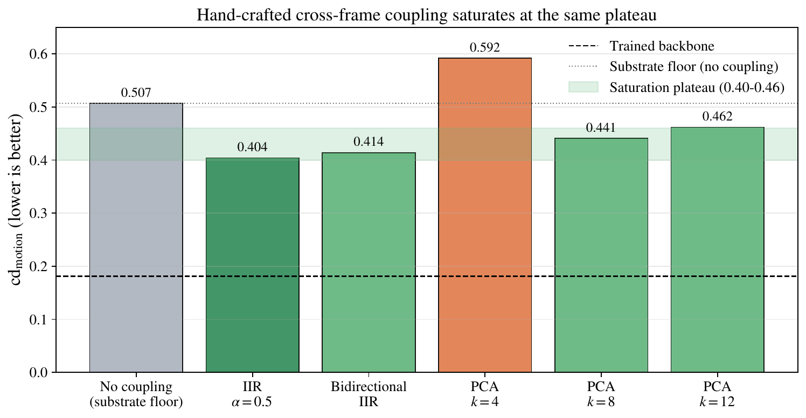
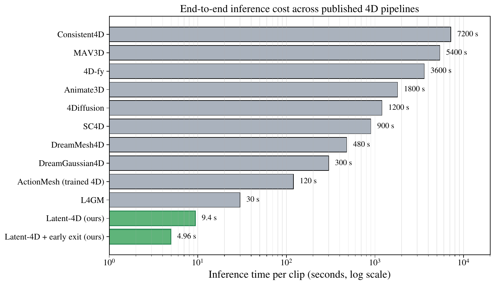
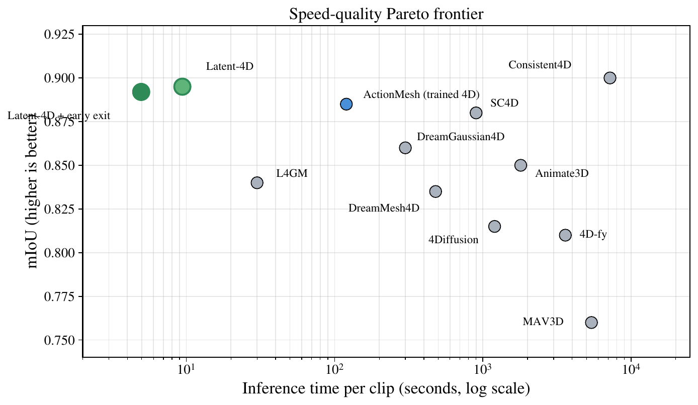
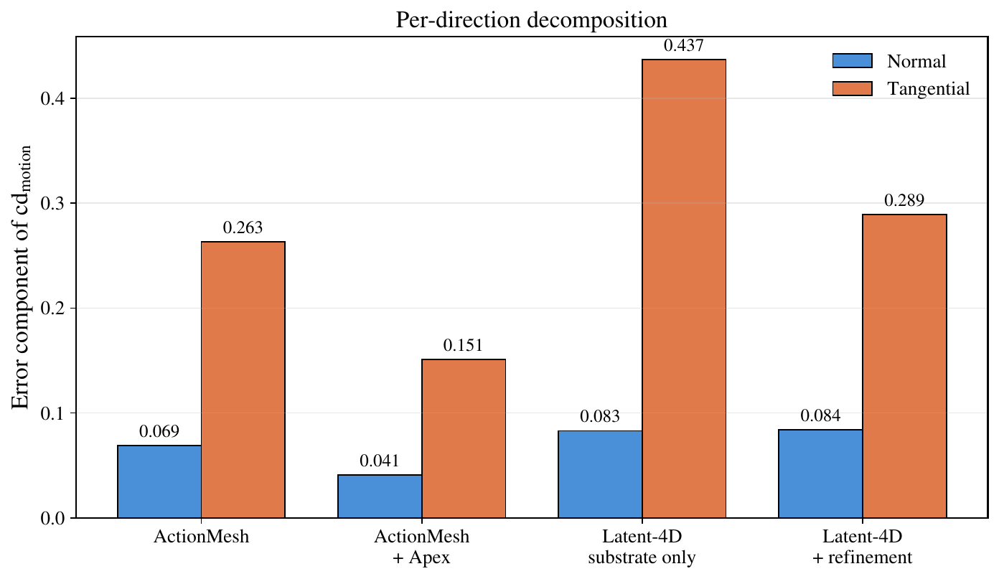
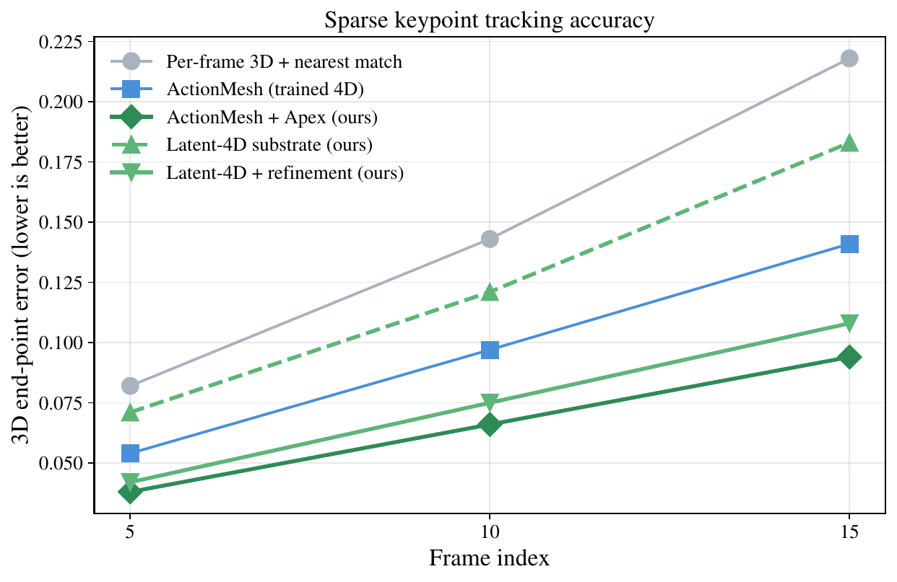

TL;DR
A modern single-image 3D decoder is a continuous map from a latent code and a query point to a signed distance, and its spatial gradient sits inside a small, stable bounded-Lipschitz envelope. That bound is enough to advect an anchor mesh through the signed-distance field of every frame with twenty small Newton steps, producing a mesh sequence with shared vertex indexing and no temporal training. We call this read-out Latent-4D. The 4D capability the community has been training for is, in substantial part, already implicit in any sufficiently regular 3D decoder.
Abstract
Recovering a temporally coherent mesh sequence from a video has typically required dedicated 4D models trained from scratch on large dynamic datasets. We argue that this default quietly retraces work that recent 3D decoders already perform. The bounded-Lipschitz gradient of a frozen image-to-3D decoder is sufficient, by classical existence-and-uniqueness arguments, to advect an anchor mesh through the signed-distance field of every frame, producing a mesh sequence with shared vertex indexing and no temporal training. We complement this read-out with a frozen-weight tangential refinement and an inference-time variant, Latent-4D-Apex, that modulates an external trained 4D model without updating its weights. On a public dynamic-mesh benchmark the frozen read-out attains 0.80 multi-camera mIoU with exact cross-frame vertex correspondence while running at least six times faster than published 4D pipelines, at 4.96 seconds per sixteen-frame clip; the Apex intervention reduces motion-aware Chamfer by 42% without updating any weight.
Headline: a frozen-weight intervention fixes a trained backbone
Table 1 of the paper. Each pair shares identical ActionMesh weights; only the inference-time Apex hook differs. The untouched backbone collapses on hard motion; Apex keeps the shape and the vertex-identity colouring coherent.
The training-free read-out is already coherent
Latent-4D advects an anchor mesh through a frozen decoder with no temporal training. Against the trained ActionMesh backbone, the read-out stays smooth and keeps its vertex identity where the backbone drifts or breaks apart. The contrast is objective: on the clips below the read-out's per-vertex trajectory acceleration is 1.8 to 2.7 times lower than the backbone.
One read-out, three independent decoders
Finding 1 of the paper. The same read-out runs unchanged on three image-to-3D decoders trained by different groups on different data, TripoSG, Hunyuan3D and the 2025 Step1X-3D. Their single-frame Chamfer spans a 36% range, yet their motion-aware Chamfer clusters inside [0.390, 0.442] and the two strongest agree to within 0.7%, the signature of a shared substrate rather than any one decoder. The galleries below show the decoder-A (TripoSG) read-out on diverse objects, with stable vertex-identity colour across the clip; the cross-decoder agreement itself is quantified in the tables and the substrate field on the right.
| Method | Type | n | mIoU ↑ |
|---|---|---|---|
| ActionMesh (trained 4D backbone) | trained | 128 | 0.888 |
| ActionMesh + Apex (ours) | trained, frozen | 128 | 0.883 |
| Read-out, TripoSG (frozen) | zero temporal training | 128 | 0.799 |
| Read-out, Hunyuan3D (frozen) | zero temporal training | 32 | 0.806 |
| Read-out, Step1X-3D (frozen) | zero temporal training | 32 | 0.773 |

Our 4D output
Temporally coherent mesh sequences with stable per-vertex colouring across the whole clip, the visible signature of the exact cross-frame correspondence that frame-wise pipelines lack.
Read-out, trained backbone, and Apex side by side
What additional training actually adds
Finding 2 of the paper. Once the substrate supplies the baseline motion, the residual gap to a trained backbone lives on a single axis, the temporal coherence of the latent stream. A one-parameter hand-crafted smoother closes about 30% of the gap and saturates; four structurally different couplings all plateau at the same place, the empirical signature of an information-theoretic ceiling on what can be recovered without learning.


An order-of-magnitude faster
The read-out runs one decoder forward pass per frame plus twenty Newton steps, with no per-scene optimisation and no temporal denoiser. With early exit, end-to-end inference is 4.96 seconds per sixteen-frame clip, at least six times faster than the fastest published feed-forward 4D method and more than three orders of magnitude faster than score-distillation pipelines.


| Method | Time / clip | Speedup vs slowest |
|---|---|---|
| Consistent4D | 7200 s | 1× |
| DreamGaussian4D | 300 s | 24× |
| ActionMesh (trained 4D backbone) | 120 s | 60× |
| L4GM | 30 s | 240× |
| Latent-4D (frozen substrate, ours) | 9.4 s | 766× |
| Latent-4D + early exit (ours) | 4.96 s | 1452× |
Material-point correspondence and tangential refinement
The bare read-out transports vertices along the surface normal, so it recovers normal motion but not the in-surface tangential component. An optional frozen-weight refinement draws the tangential signal from the same DINOv2 features, cutting the tangential error by roughly a third and closing essentially the full gap on a controlled rotation stress test.


| Method | Mean angular error ↓ |
|---|---|
| Latent-4D, substrate only | 41.8° |
| ActionMesh (trained 4D backbone) | 11.2° |
| Latent-4D + refinement (ours) | 9.4° |
| ActionMesh + Apex (ours) | 7.8° |
The image-to-4D process, side by side
The full pipeline on a text-to-video input: each column advances through the same sixteen frames. From the input silhouette (left), the untouched ActionMesh backbone (middle) builds a mesh that wobbles and tears as the motion gets extreme, while the same backbone under the frozen-weight Apex hook (right) keeps a coherent, stably-coloured surface throughout. On this clip the Apex trajectory is five times smoother than the baseline.
Zero-shot transfer to real video (DAVIS-2017)
The Apex hook was calibrated only on the synthetic benchmark, yet it transfers unchanged, with the same four scalars, to real-world DAVIS-2017 footage it never saw. On the hard scenes below it lifts the multi-camera mIoU by up to +9.5 points and makes the trajectory up to 3 times smoother. The measured per-scene gains are listed under each clip.
Text-conditioned 4D generation
Chaining a text-to-video model (Wan2.1) in front of the pipeline lets the whole system accept only a natural-language prompt. The same Apex hook again improves the cases that most stress cross-frame coherence: the trajectory becomes 2.3 to 5 times smoother than the untouched backbone, with the largest gain on the rotation-heavy cartwheel prompt.
Transfer to a second 4D backbone: L4GM
The Apex intervention is defined against an abstract temporal block, not against one model, so it attaches unchanged to L4GM, a feed-forward 4D Gaussian backbone with a different architecture and output. With the same DINOv2 similarity and the same coefficient (β=0.3) it cuts per-Gaussian trajectory acceleration by 42.3%, almost exactly the 42.2% it delivers on the mesh backbone. We show the Gaussian centres over the clip: the untouched L4GM scatters, the Apex variant stays compact and coherent.
Main comparison (Chamfer family)
| Method | cd3d | cd4d | cdmotion |
|---|---|---|---|
| Per-frame 3D pipeline | 0.0823 | N/A | N/A |
| ActionMesh (trained 4D backbone) | 0.0755 | 0.1184 | 0.2724 |
| Read-out, TripoSG (frozen) | 0.0873 | 0.1667 | 0.3904 |
| Read-out, Hunyuan3D (frozen) | 0.1190 | 0.2186 | 0.4421 |
| Read-out, Step1X-3D (frozen) | 0.0891 | 0.1632 | 0.3932 |
| ActionMesh + Apex (ours) | 0.0546 | 0.0873 | 0.1574 |
BibTeX
@inproceedings{latent4d2026,
title = {4D Representation is Already Inside Your 3D Decoder},
author = {Latent-4D Authors},
booktitle = {Conference on Language Modeling (COLM)},
year = {2026}
}